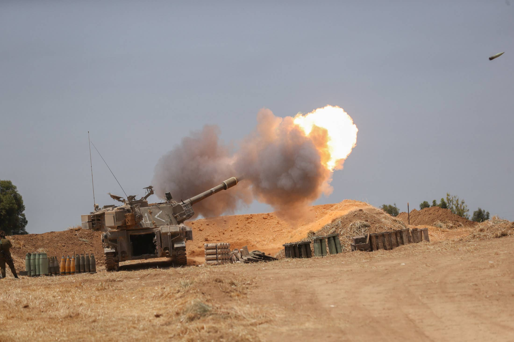

In Israel, Almost Everyone Is on the Front Line
The IDF was scheduled to begin 'war month' this week, a long exercise period on the basis of a scenario of fighting on two fronts at the same time: Lebanon and Gaza.
On Wednesday the drill was aborted and the calls to most of the reservists who were supposed to take part in it were canceled.Instead, some 7,000 reserve soldiers received emergency calls to the real thing.It wasn’t the first time this has happened.A drill in 2000 had the exact same fate when it was halted due to the outbreak of the second intifada and the October riots in the Arab community.This time too it reality seems to surpass the exercise planners’ imagination.
Only $1 for the first month when you buy an annual subscription
This is a subscriber-only article.
Subscribe now to get unlimited access to the most reliable reporting on Israel, the Middle East and the Jewish world.Cancel anytime.
Posted On: 2021-05-14T00:00:00

Content Date: 2021-05-14
Download Date: 2021-05-19
Document ID: L0C04CIF5